População: ~6,7 milhões

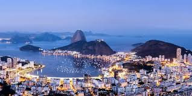
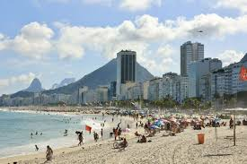
São Gonçalo é uma cidade com grande crescimento populacional, próxima à capital.
População: ~1,1 milhão
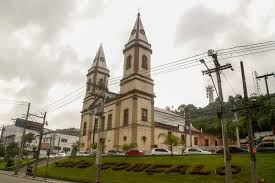
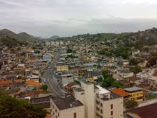
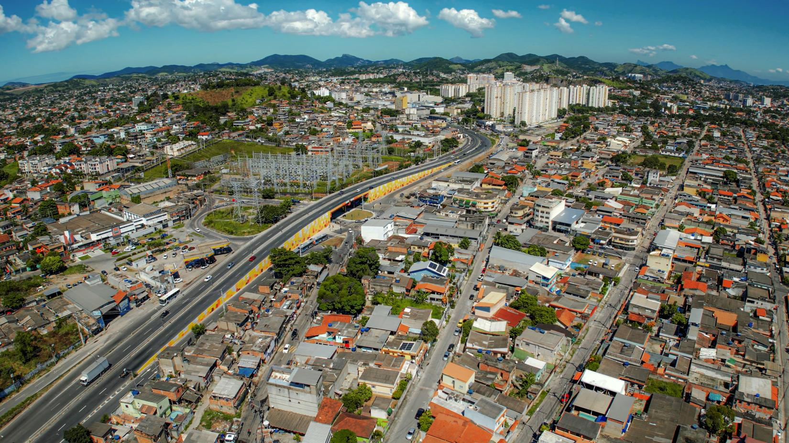
Duque de Caxias é um importante polo industrial e logístico, com presença forte no setor de petróleo.
População: ~930 mil
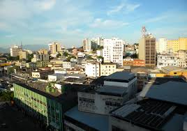
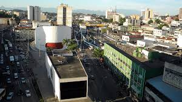
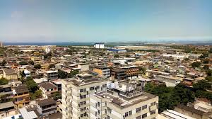
Nova Iguaçu é uma grande cidade da Baixada Fluminense, com comércio e serviços expressivos.
População: ~830 mil

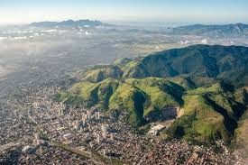
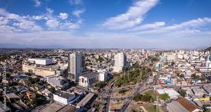
Niterói é conhecida por seu alto IDH, sendo um importante centro de serviços e educação.
População: ~520 mil
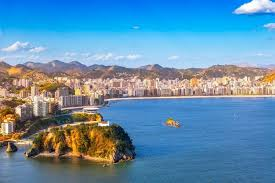
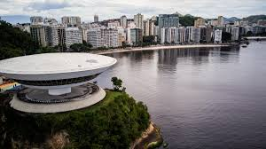
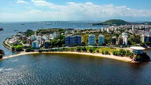